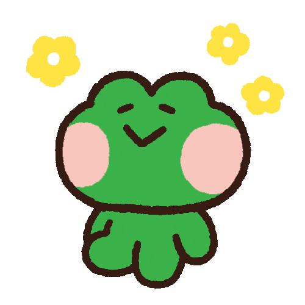
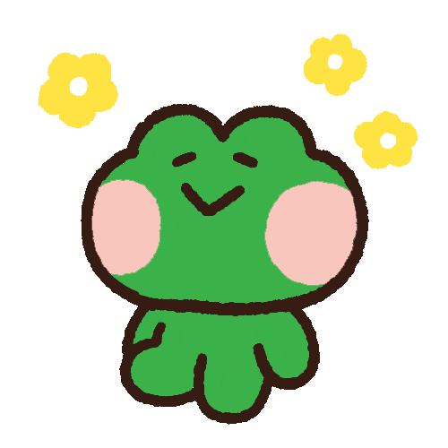

About
Yanaju
Hi, and welcome to YANAJU! I am Jhuliana R. Ledesma, a BS Computer Science student at the University of the Philippines Los Baños, currently based in Quezon City. I have a strong interest in design, which led me to be interested in UI/UX Development, particularly on how I can bring ideas to life through design and code! I am eager to gain more experience in this field, where I can blend my creativity with technology to make meaningful user experiences. YANAJU is my portfolio-in-progress, and it showcases some of my projects. I look forward to adding more as I continue learning and growing in the field! :)
My Previous Projects
kasangga
kasangga is an org-based project I worked on with a team. It is a web application designed to serve as a reliable platform for managing partnerships between student organizations within the UPLB community. My main contribution was developing the home page—designing its layout, styling it, and adding interactive features to make it more intuitive.
NutriBuddy
NutriBuddy is an application designed to solve the Diet Problem, which aims to determine the most cost-effective way to meet an individual's nutritional requirements, using Simplex Programming. It is developed using R and R-Shiny, making sure it's both functional and user-friendly.